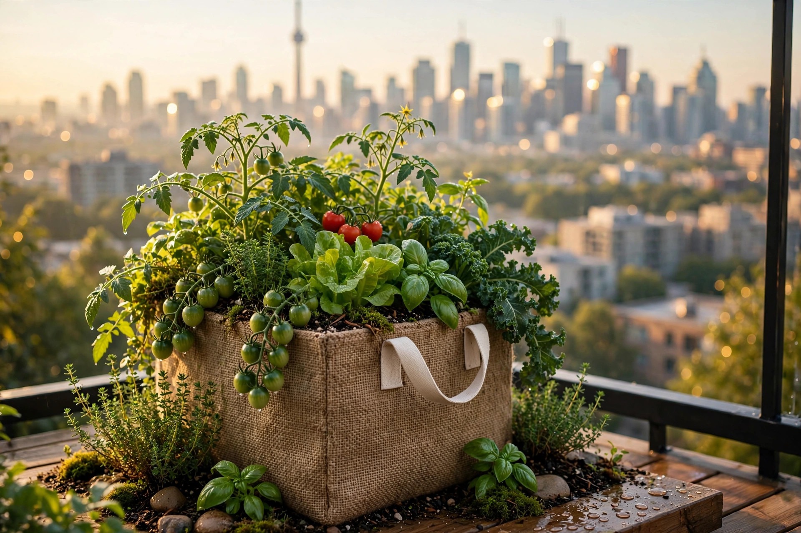
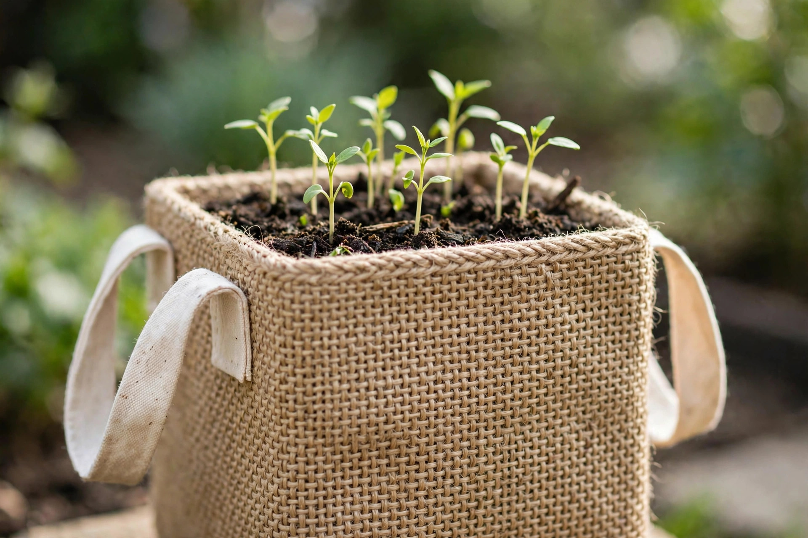
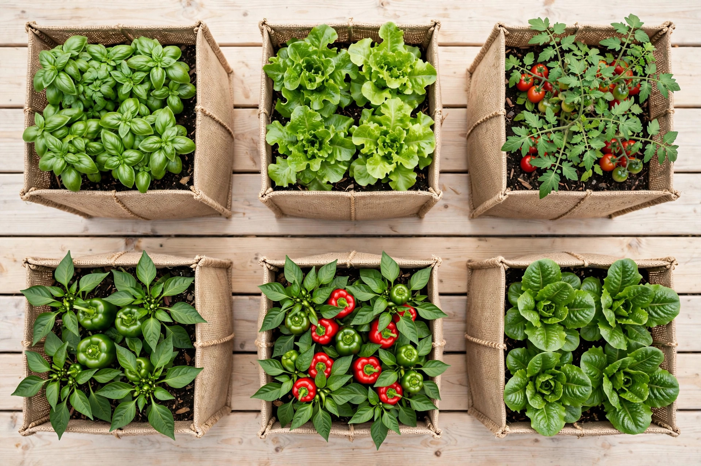
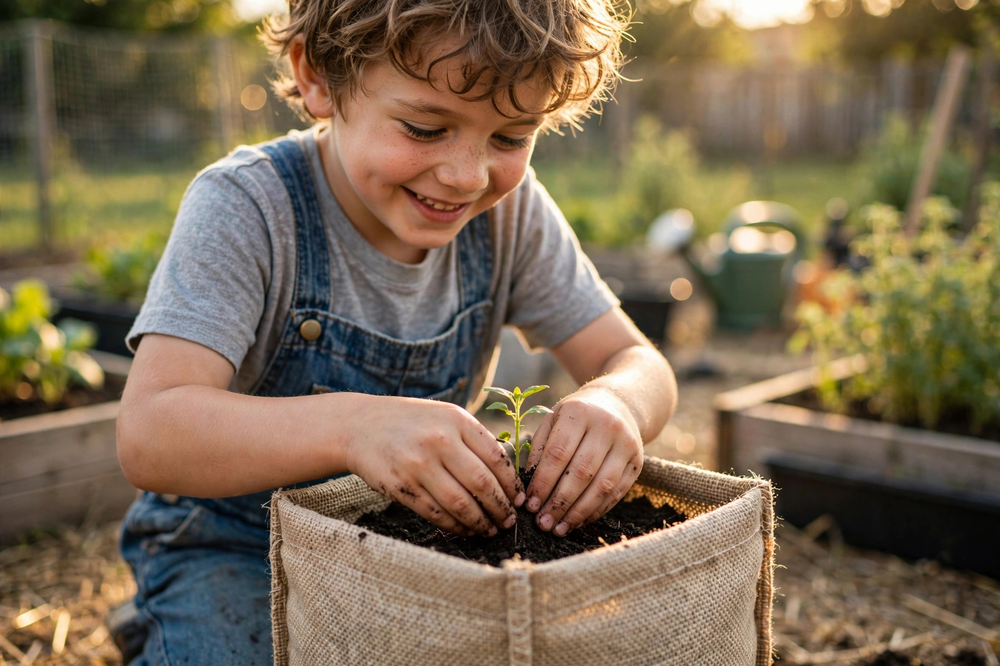

Pop it up
Unfold your flat-packed MyGroBox and watch it spring into a sturdy 28 cm cube. No tools, no instructions manual, no sweat.
🌿 Toronto-made · 100% biodegradable
MyGroBox is a portable fabric grow box that lets you grow fresh vegetables, herbs and flowers anywhere — a balcony, a rooftop, even a classroom. No tools, no assembly, no experience needed.

biodegradable & compostable fabric
the perfect 11″ growing cube
featherlight & flat-packed
tools or assembly needed

The product
MyGroBox is an 11″ fabric planter woven from all-natural fibres. It ships flat, pops up in seconds, and turns any square foot of space into a living garden.
How it works
Three steps. No green thumb required.
Unfold your flat-packed MyGroBox and watch it spring into a sturdy 28 cm cube. No tools, no instructions manual, no sweat.
Add your favourite potting mix. The breathable woven fabric holds everything in while letting roots breathe.
Sow seeds or tuck in seedlings. Then sit back — the fabric does the heavy lifting for healthier, happier plants.

Why it works
The fabric isn’t just a container — it’s a better way to grow.
Breathable fabric creates the airy, living soil environment seeds love — so they sprout faster and stronger.
Air flows through the woven walls, multiplying root growth instead of letting roots circle — for increased yields and healthier plants.
Made from 100% biodegradable and compostable all-natural fibres. When its growing days are done, it returns to the earth.
Each cube fits neatly in a standard milk crate. Stack them, line them up, build the garden that fits your space.
The fabric retains moisture and regulates soil temperature, making your garden naturally drought resistant.
Balcony, rooftop, fire escape, classroom — if you have a square foot of sun, you have a garden.

Our mission
MyGroBox exists to make growing food accessible to everyone — one square foot at a time. No backyard, no budget, no experience? No problem.
Founded in Toronto by Corina Ottnad, MyGroBox is on a mission to put fresh, homegrown food within everyone’s reach.
🌻 School Pilot Program
The MyGroBox School Pilot Program brings hands-on gardens directly into schools — because 1 in 4 Toronto students faces food insecurity. We’re helping the next generation grow their own food, right at their desks.
Bring MyGroBox to your schoolLimited-time launch pricing
One MyGroBox fabric grow box · 28 cm cube · ships flat-packed
Prices in CAD. Concept preview — order via mygrobox.com
Good questions
Regular pots trap roots — they circle the walls and choke the plant. MyGroBox’s breathable woven fabric lets air reach the roots, multiplying root growth for faster germination, increased yields and healthier plants.
Yes — it arrives flat-packed and pops up into a sturdy 28 cm cube in seconds. No tools, no assembly, no instructions needed.
Vegetables, herbs, flowers — anything suited to square-foot gardening. Tomatoes, lettuce, basil, peppers and more all thrive in a single cube.
The all-natural woven fabric breathes, so roots get more oxygen and grow outward instead of circling. It also regulates soil temperature and retains moisture — keeping plants comfortable through hot and dry spells.
Completely. MyGroBox is made from 100% biodegradable and compostable all-natural woven fabric with cotton handles — no plastics, nothing to send to landfill.
Less than you’d think. The fabric retains moisture while still draining well, making your garden naturally drought resistant and low maintenance.